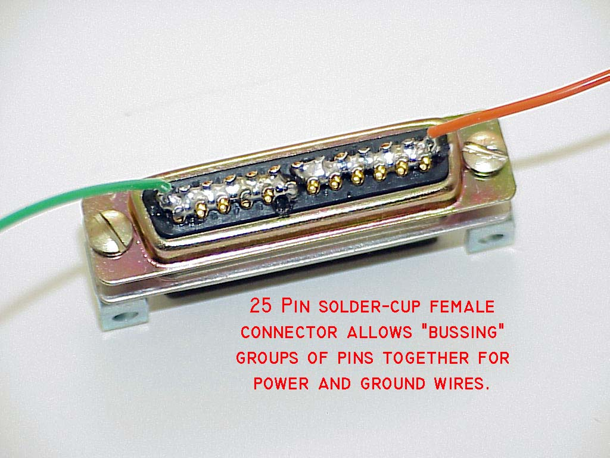
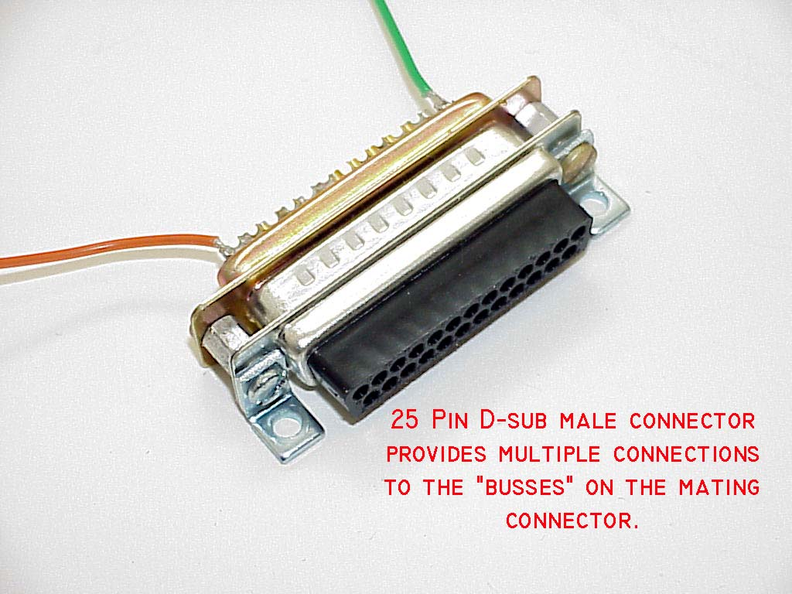

|
|
Bob's Shop Notes: |
|
When wiring panel lighting, a builder may encounter a situation where multiple panel lamp fixtures need a place to get power. For example, the 6-pak of flight instruments may have 12 pairs of power and ground wires for eyebrow, wedge or post lighting. Here's a one way to provide a mini-bus structure close by the lighting fixtures that is neat, compact and easy to fabricate. Click here for larger image. We start with a D-sub connector having sufficient number of pins. For example, a 25-pin connector illustrated here will easily accommodate 12 pairs of both power and ground wires for an array of lighting circuits. D-subs also come in 9, 15 and 37 pin varieties which may be more suited to your task. Further, if all you're wiring are post-lights, these automatically ground to the panel through their mounting post and you don't need a ground bus. When picking the connector size, allow for some unused spare slots for future expansion. Use a solder-cup, female connector and solder combinations of pins together to form a mini power distribution bus. Here I used short pieces of 16AWG wire with insulation removed. Lay the short wire segments between the pins to be joined and solder as shown. Now's the time to add feeders to your mini-busses . . . these wires will route off to the dimmer control and to airframe ground. |
 |
|  |
Click here for larger image Here you see the bussed
female connector mated with a male housing. I've used threaded spacers to hold
the connectors together and angle brackets to provide a means for mounting the
assembly. I prefer the machined, crimp-on D-sub pins so by choosing a solder cup female as the bussing connector, less expensive male pins can be used to terminate individual fixture wires at your dimmer's mini-bus. Mount this assembly on the instrument panel in some central to the light fixtures being wired up. If the best mounting requires holes in the panel and you'd really like to avoid screw-heads showing on the pilot side of the panel, consider attaching a 1" wide mounting base of aluminum sheet, say 0.062" thick and then using the surface of this sheet to mount the assembly to the back of the panel with high-bond strength, double-sticky, foam tape. |
 Click here to contact Bob at AeroElectric Connection Click here to contact Bob at AeroElectric Connection |
{kind=link}
{kind=link}